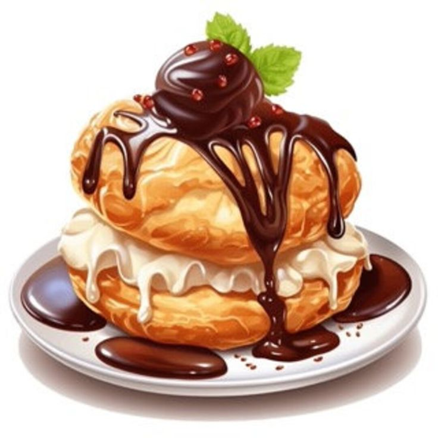

"The Stuffed status effect makes it so that the player becomes unable to eat any Food items or use potions. The status cannot be removed by cleansing spells (unless the spell or skill specifically removes it). Most rare or powerful food items will inflict the players with Stuffed to prevent the player from abusing them."
